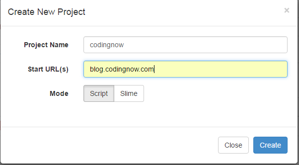
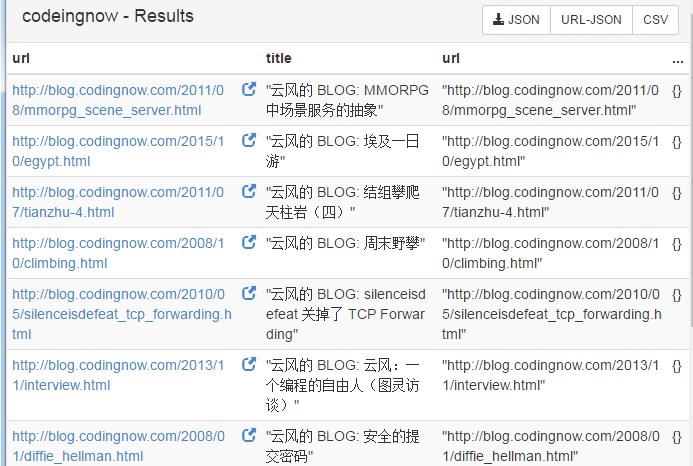
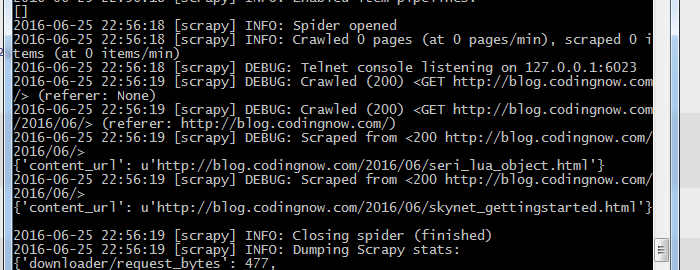
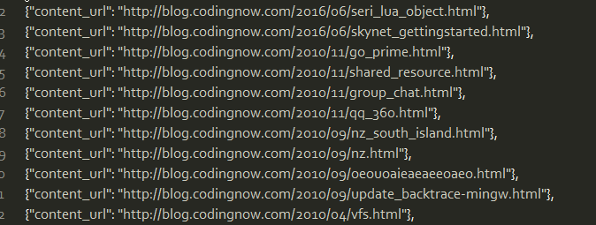

python爬虫初探¶
pyspider¶
github : https://github.com/binux/pyspider
其他文档 + http://docs.pyspider.org/en/latest/ + http://blog.binux.me/2015/01/pyspider-tutorial-level-1-html-and-css-selector/
安装¶
安装依赖环境和python¶
sudo apt-get install python python-dev python-distribute python-pip libcurl4-openssl-dev libxml2-dev libxslt1-dev python-lxml sudo apt-get install python-pip
安装PhantomJS¶
官网:http://phantomjs.org/ PhantomJS是一个基于 WebKit 的非界面渲染html的引擎,用于 页面自动化 ， 网络监测 ， 网页截屏 ，以及 无界面测试 等
sudo apt-get install phantomjs
安装pyspider¶
pip install pyspider
错误¶
- connect to scheduler rpc error: error(111, 'Connection refused')
pip install -U supernova
启动¶
pyspider
创建项目¶
打开localhost:5000打开dashboard,create new project

创建脚本:我这里以抓取一下云风的所有博文链接为例:
# -*- coding: utf-8 -*- from pyspider.libs.base_handler import * import re class Handler(BaseHandler): crawl_config = { "message_queue": "redis://localhost:6379/db" } #开启启动任务入口,一般为主页 @every(minutes=24 * 60) def on_start(self): self.crawl('http://blog.codingnow.com/', callback=self.index_page) #根据标签过滤,页面上有个[enable css selector helper]可以快速定位 @config(age=10 * 24 * 60 * 60) def index_page(self, response): for each in response.doc('.module-archives li > a[href^="http"]').items(): if re.match("^http://blog.codingnow.com.*/$", each.attr.href): self.crawl(each.attr.href, callback=self.second_index_page) #我这里做了一个二级抓取,第一级为日期分类 @config(age=10 * 24 * 60 * 60) def second_index_page(self, response): for each in response.doc('.permalink[href^="http"]').items(): if re.match("^http://blog.codingnow.com", each.attr.href): self.crawl(each.attr.href, callback=self.detail_page) #详情页我只抓了title和url.这里也可以分析正文 @config(priority=2) def detail_page(self, response): return { "url": response.url, "title": response.doc('title').text(), }

scrapy¶
doc : http://doc.scrapy.org/en/0.24/
安装scrapy¶
liux安装
pip install scrapy
#Twisted， lxml先下载编译好的包安装再安装scrapy
pip install scrapy
创建工程¶
scrapy startproject codeingnow
结构如下:
codeingnow │ scrapy.cfg # 项目配置文件 └─codeingnow │ items.py #项目items文件 │ pipelines.py #项目管道文件 │ settings.py #项目配置文件 └─spiders
在spiders创建爬虫程序 codeingnow_scrapy.py
# -*- coding: utf-8 -*- import scrapy class CodeingNowSpider(scrapy.Spider): name = 'codeingnow' start_urls = ['http://blog.codingnow.com/'] def parse(self, response): for url in response.css('div[class*=module-archives] a::attr(href)').re('^http://blog.codingnow.com.*/$'): yield scrapy.Request(url, self.parse_content_url) # break def parse_content_url(self, response): for content_url in response.css('a[class*=permalink]::attr(href)').extract(): yield {'content_url': content_url}
-
直接运行spider:
scrapy runspider codeingnow_scrapy.py -
在工程目录中运行,并导出数据为json
scrapy crawl codeingnow -o items.json -t json结果: 